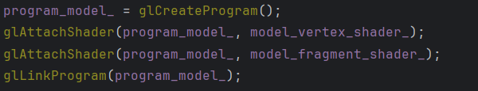

My Computer Graphic Project Blog
Context
For the purpose of my school project at the SAE Institute, we have made a **3D scene** made using **OpenGL**. In this scene, there can be found various visual effects made throught shaders written in **GLSL coding language**. Those effects implies **blooming lights**, cube map also known as a **skybox** and as well as the ability to **load .obj and .gltf 3D Models**. To do so was set various **pipelines** using some shaders such as a **vertex and fragment shader**. To work, there has to be a set of OpenGl program and linking it with the chosen shaders.
This is an example of a vertex shader made in GLSL :
This is what the scene looks like (note : the light appears randomly somewhere in the scene):

Global Explication : begin
The Program works with a relatively simple method :
The first step is to prepare the scene and it's parameter meaning **loading all textures** then **setting up all the shaders and pipelines** and finally, preparing the **framebuffers**.
As you see, in here we use a simple **namespace** in which we have set a function called LoadTexture. This function uses an external API named **stbi_load.h** that takes care of loading proprely the texture indicated with the path.
This time, an example of a pipeline is shown, it works in **four phases** : loading the shaders, create a program, attaching the shaders to the program and funally, linking the shaders to the program.
A **framebuffer** is the most scary thing to prepare, it needs to be **generated**, **bind** and depending on your utilities, you can add a few attachements such as a **color buffer** that you also have to configure.
As you can witness, the begin part takes it's time, **around 1.5 seconds**. To capture this, we used another external tool named **Tracy** allowing us to **profile** the time each function takes. For this reason, it is way better to do it once at the start rather than making this step each frame.
Global Explication : main loop
This is the main part of the project :
The main loop is as in it's name, a loop that will redo itself each frame. Since we are using **OpenGL**, we are gonna divide it's work in **passes** and **sub passes**. For our scene, we divided the work in 4 passes :
- Shadow pass for shadow calculations.
- G-buffer pass for visual effects such as the **SSAO**.
- Geometry pass to render the scene.
- Light pass to render lights and post process effect like **bloom**.
Each pass has a special utility and most of them need associated **framebuffers**. For the **shadow pass**, we will need to make a **depth map** of the different objects present on our scene for the light perspective.
Depth map example :
The **G-Buffer pass** needs to make a few more "maps". In total, we are gonna have four different maps from this pass : **geometry**, **SSAO**, **blured SSAO** and finally the **ambient occlusion** made from the other four.
Geometry (note : this is a map of the object's position) :
SSAO :

Blured SSAO :
Final ambient occlusion :
For the **geometry pass**, there's no need to make any maps but for the lights, there is a need to use at least one **framebuffer** : for the **bloom**
Bloom effect (consecutive blur of the light) :
All of this, as said before, is a series of effect we repeat **each frame**. Due to this, we can ask ourselves how long does it take and if the scen lag for example. Again, to do so, we can use **Tracy**, the profiling tool.
When we use it, we get such result :
On this tracy page, we notice a few things : the update takes **20ms** meaning our scene runs at around **50 frames per seconds**. out of those 20ms, **19 are taken for the shadow pass calculation** meaning we could do some heavy optimisation in that domain. Compared to the shadow pass, the **G-buffer** takes a little **800 micro-seconds** and the **Bloom or light pass** takes **151 micro-seconds**. And of course, the rest of the time (around a second) is taken in between those passes to render the scene fully.
Final conclusion
This Project had a lot of different implementations that were really interesting to do. There still are a lot of different visual effects i did not implement that could be intresting to add such as **the PBR lighting**. Overall, it was a relatively good thing to do simply to gather knowledge about the world of making video games. Thank you for reading until the end, I hope this project motivated you to start your own.
Download the executables